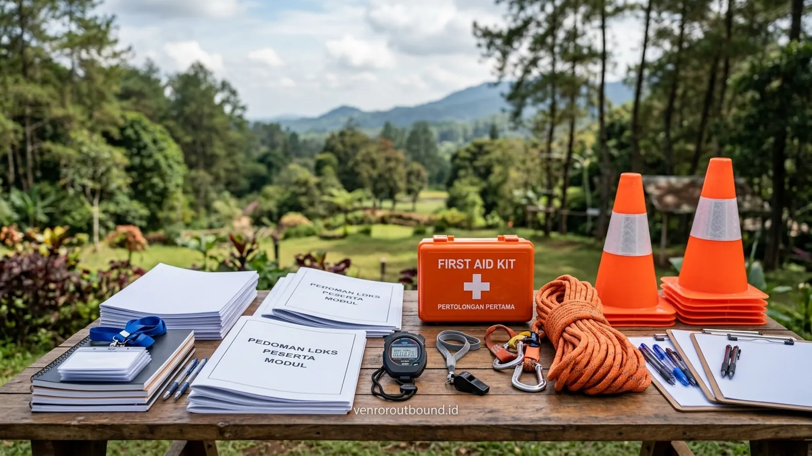

Penyelenggaraan Latihan Dasar Kepemimpinan Siswa (LDKS) merupakan salah satu agenda tahunan paling strategis bagi institusi pendidikan tingkat SMP, SMA, SMK, maupun yayasan pendidikan. Kegiatan ini menjadi gerbang utama dalam mencetak kader pengurus OSIS, MPK, dan ekstrakurikuler yang siap menggerakkan roda organisasi kesiswaan. Namun, mengorganisasi acara kepemimpinan luar ruang berskala besar membutuhkan perencanaan teknis yang tidak sederhana.
Sering kali, dewan guru dan panitia sekolah dihadapkan pada keterbatasan waktu persiapan di tengah padatnya jadwal kurikulum akademik. Mengelola puluhan hingga ratusan siswa di alam terbuka, menyusun simulasi permainan yang mendidik, menjaga ritme waktu agar tidak molor, serta memastikan kepatuhan standar keselamatan menuntut kehadiran mitra profesional. Di sinilah layanan penyedia paket outbound sekolah hadir sebagai solusi terpadu.
1. Tinjauan Layanan Fasilitator LDKS Terintegrasi
Jasa fasilitator LDKS dan leadership sekolah membantu institusi pendidikan menyiapkan kegiatan kepemimpinan siswa melalui briefing, simulasi, teamwork, problem solving, refleksi, dan evaluasi. Program dapat disesuaikan dengan usia peserta, tujuan sekolah, jumlah peserta, lokasi, durasi, serta kebutuhan organisasi siswa.
Program dirancang dengan memperhatikan aspek keselamatan dan pengelolaan risiko sesuai karakter aktivitas. Kami memposisikan tim fasilitator bukan sekadar sebagai pemandu games lapangan, melainkan sebagai fasilitator pembelajaran berbasis pengalaman yang berkolaborasi erat dengan guru pembina kesiswaan untuk menanamkan nilai-nilai karakter positif.
2. Tantangan Nyata yang Dihadapi Panitia Guru dalam Menyelenggarakan LDKS
Berdasarkan pengalaman mendampingi berbagai agenda kesiswaan, panitia internal sekolah umumnya menghadapi sejumlah tantangan operasional:
- Beban Ganda Guru: Guru pembina harus membagi fokus antara tugas mengajar harian, administrasi sekolah, dan persiapan teknis logistik LDKS.
- Heterogenitas Karakter Siswa: Setiap angkatan memiliki dinamika kelompok yang beragam, memerlukan pendekatan fasilitasi yang sabar, inklusif, dan mampu merangkul siswa dari berbagai latar belakang.
- Kebutuhan Modul Edukatif yang Relevan: Mengembangkan variasi simulasi yang segar agar siswa tidak merasa bosan dengan format permainan yang monoton.
- Manajemen Waktu dan Kontrol Acara: Menjaga kepatuhan jadwal agar seluruh sasaran materi tersampaikan secara tuntas tanpa membuat siswa kelelahan berlebih.
- Tuntutan Standar Keamanan & K3: Memastikan seluruh rute, properti rintangan, dan kondisi fisik peserta terpantau dengan baik guna meminimalkan risiko cedera.
3. 8 Kriteria Fasilitator Profesional yang Wajib Diperhatikan Sekolah
Dalam memilih mitra penyedia jasa fasilitator kepemimpinan kesiswaan, pihak manajemen sekolah dan yayasan disarankan memperhatikan delapan kriteria kompetensi berikut:
| Kriteria Kompetensi | Indikator Pelaksanaan Lapangan | Manfaat Nyata bagi Siswa & Sekolah |
|---|---|---|
| 1. Pengelolaan Dinamika Peserta | Mampu mengarahkan kelompok besar secara tertib tanpa intimidasi | Suasana latihan kondusif, menyenangkan, dan berwibawa |
| 2. Komunikasi Edukatif & Apresiatif | Menggunakan bahasa yang santun, memotivasi, dan menghargai remaja | Membangun rasa percaya diri dan harga diri positif siswa |
| 3. Pemahaman Interaksi Kelompok | Peka terhadap sekat sosial, dominasi individu, atau anggota pasif | Mendorong partisipasi aktif dari seluruh peserta tanpa terkecuali |
| 4. Desain Simulasi Terarah | Menyiapkan rintangan yang memiliki sasaran belajar (learning objective) | Aktivitas terarah pada penalaran kritis dan pemecahan masalah |
| 5. Keterampilan Debriefing Mendalam | Mampu memandu siswa menarik refleksi nilai dari pengalaman | Materi tidak sekadar menjadi permainan fisik sesaat |
| 6. Disiplin Standar Keselamatan | Menerapkan safety briefing, pengecekan alat, dan tanggap darurat | Menghadirkan ketenangan bagi sekolah dan orang tua murid |
| 7. Koordinasi Erat dengan Guru | Terbuka dalam sinkronisasi rundown dan evaluasi berkala | Kegiatan berjalan selaras dengan kebijakan kurikulum sekolah |
| 8. Fleksibilitas Skenario Lapangan | Siap menjalankan rencana kontinjensi (Plan B) saat cuaca berubah | Agenda kegiatan tetap berjalan lancar dan aman |

4. Komponen Terpadu Paket Outbound Sekolah & Leadership Camp
Penyelenggaraan program paket outbound sekolah dapat dirancang dengan komponen yang fleksibel sesuai alokasi anggaran dan kebutuhan institusi:
- Tim Fasilitator & Instruktur Lapangan: Bertugas memimpin simulasi, mengelola dinamika regu, dan memandu sesi debriefing.
- Modul Kurikulum LDKS Terintegrasi: Buku panduan kegiatan atau lembar kerja peserta yang memuat alur pembelajaran bertahap.
- Peralatan & Properti Simulasi Lengkap: Properti permainan rintangan logika, tali temali, papan strategi, dan alat bantu dinamika kelompok.
- Venue & Akomodasi Luar Ruang: Pemilihan lokasi perkemahan atau aula luar ruang yang representatif, asri, dan aman.
- Katering & Konsumsi Peserta: Penyediaan makanan higienis dan minuman yang menjaga stamina siswa sepanjang agenda.
- Lembar Observasi & Laporan Evaluasi: Rangkuman evaluasi dinamika kepemimpinan yang diserahkan kepada guru pembina sebagai bahan tindak lanjut di sekolah.
5. Fleksibilitas Pemilihan Lokasi Kegiatan di Kawasan Jawa Timur
Kawasan Jawa Timur menawarkan berbagai pilihan area luar ruang yang sangat kondusif untuk program kepemimpinan siswa, di mana lokasi dapat dipilih berdasarkan kebutuhan sekolah dan hasil koordinasi bersama:
- Kawasan Perkemahan Pegunungan: Menawarkan udara sejuk alami dan ruang lapang hijau yang luas, sangat cocok untuk format 2 hari 1 malam dengan suasana retreat.
- Resort & Villa Edukasi: Memberikan fasilitas aula tertutup yang nyaman untuk sesi materi internal kesiswaan berpadu dengan halaman terbuka untuk simulasi aksi.
- Lapangan Terbuka Lingkungan Sekolah: Menjadi opsi efisien bagi sekolah yang ingin mengoptimalkan fasilitas internal tanpa memerlukan mobilisasi transportasi jauh.
6. Contoh Rundown LDKS 2 Hari 1 Malam Terstruktur
Berikut adalah contoh susunan jadwal kegiatan LDKS 2D1N yang dirancang seimbang antara aktivitas fisik, pemikiran strategi, dan istirahat yang cukup:
| Waktu (WIB) | Agenda Kegiatan | Fokus Aktivitas & Target Sikap |
|---|---|---|
| HARI PERTAMA — PEMBENTUKAN KARAKTER & SINERGI KELOMPOK | ||
| 08.00 — 08.30 | Registrasi & Pembukaan Resmi | Penyambutan peserta, sambutan kepala sekolah, penyerahan kepada fasilitator |
| 08.30 — 09.00 | Safety Briefing & Kontrak Belajar | Penyepakatan aturan main, komitmen disiplin positif, pengenalan SOP K3 |
| 09.00 — 10.30 | Ice Breaking & Regu Dynamics | Pencairan suasana, pembagian kelompok heterogen, pembuatan yel-yel komitmen |
| 10.30 — 12.00 | Leadership Challenge Station 1 | Simulasi kepemimpinan berorientasi solusi dan komunikasi asertif |
| 12.00 — 13.00 | Ishoma (Makan Siang & Istirahat) | Pembiasaan adab makan bersama, kebersihan lingkungan, dan relaksasi |
| 13.00 — 15.00 | Tactical Problem Solving Relay | Tantangan pemecahan masalah dengan batas waktu dan keterbatasan sumber daya |
| 15.00 — 16.00 | Guided Reflection Sesi Siang | Debriefing mendalam mengenai hambatan komunikasi dan evaluasi regu |
| 16.00 — 19.00 | Istirahat Mandiri, Mandi, & Makan Malam | Kemandirian pengelolaan waktu pribadi dan pemulihan kebugaran fisik |
| 19.00 — 20.30 | Character Reflection & Visi OSIS | Kontemplasi nilai integritas, tanggung jawab, dan penguatan visi organisasi |
| 20.30 — 21.00 | Briefing Hari Kedua & Istirahat Malam | Penyiapan istirahat tertib demi kesiapan fisik kegiatan esok hari |
| HARI KEDUA — EKSEKUSI STRATEGI & KOMITMEN AKSI | ||
| 06.30 — 07.30 | Morning Agility & Sarapan Sehat | Pemanasan kebugaran jasmani dan sarapan bersama secara teratur |
| 07.30 — 09.30 | Grand Leadership Synergy Challenge | Simulasi integrasi antardivisi, kolaborasi lintas bidang, dan ketahanan mental |
| 09.30 — 11.00 | Debriefing & OSIS Action Plan Drafting | Penyusunan komitmen rencana kerja nyata organisasi kesiswaan di sekolah |
| 11.00 — 12.00 | Closing Ceremony & Penyerahan Hasil | Penyampaian apresiasi fasilitator, pesan guru pembina, penutupan resmi, foto bersama |
*Catatan: Rundown di atas merupakan contoh ilustratif. Jadwal pelaksanaan dapat disesuaikan sepenuhnya berdasarkan karakteristik peserta, kebijakan sekolah, fasilitas lokasi, serta durasi yang dialokasikan.
7. Tata Kelola Manajemen Risiko & SOP Keselamatan di Alam Terbuka
Aspek keselamatan peserta merupakan prioritas mutlak yang tidak dapat dikompromikan. Tata kelola keselamatan mencakup serangkaian prosedur operasional standar:
- Safety Briefing Komprehensif: Penjelasan batas area aman, aturan keselamatan properti, dan instruksi penanganan bila merasa kurang sehat.
- Skrining Riwayat Kesehatan Peserta: Koordinasi dengan pihak sekolah mengenai data siswa yang memiliki riwayat asma, alergi berat, atau pembatasan fisik.
- Rasio Fasilitator yang Memadai: Penempatan instruktur pendamping di setiap pos rintangan untuk memastikan pengawasan berjalan ketat.
- Kesiapan Kotak P3K Outdoor & Jalur Evakuasi: Perlengkapan pertolongan pertama standar luar ruang serta koordinasi jalur transportasi darurat menuju fasilitas kesehatan terdekat.
Sukseskan LDKS Sekolah Anda Bersama Fasilitator Profesional
Undang tim fasilitator kami untuk menyukseskan LDKS sekolah Anda di +62 82211221909.
Hubungi Tim Fasilitator via WhatsApp8. Kesimpulan & Prosedur Permintaan Proposal Kustom
Menyelenggarakan LDKS yang berbobot, aman, dan mendidik merupakan wujud komitmen sekolah dalam menyiapkan generasi pemimpin masa depan yang berkarakter kuat. Dengan dukungan tim fasilitator yang berdedikasi, pihak sekolah dapat memastikan bahwa seluruh rangkaian kegiatan berjalan lancar, terstruktur, serta memberikan dampak perubahan perilaku yang positif bagi para pengurus organisasi siswa.
Tim konsultan kami siap berdiskusi untuk merumuskan draf kurikulum, susunan jadwal, serta penawaran paket yang paling selaras dengan kebutuhan sekolah dan yayasan Anda.
Pertanyaan Sering Diajukan (FAQ)

Arby Ardiansyah
Arby Ardiansyah mendedikasikan keahliannya dalam perancangan kurikulum pembinaan kepemimpinan kesiswaan, modul outdoor disiplin positif, serta fasilitasi experiential learning untuk sekolah di Indonesia.